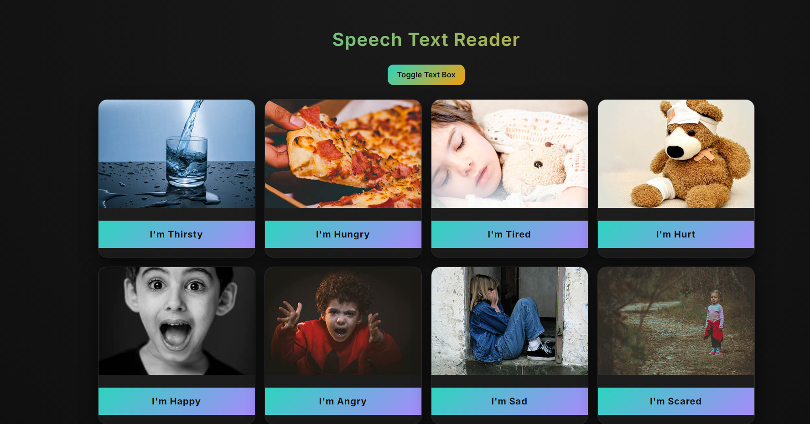
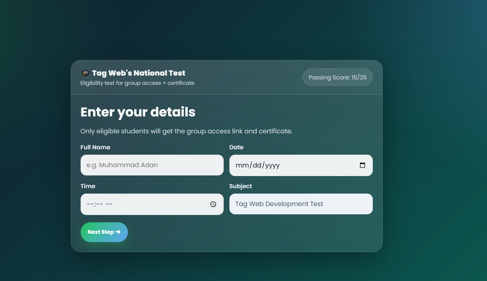
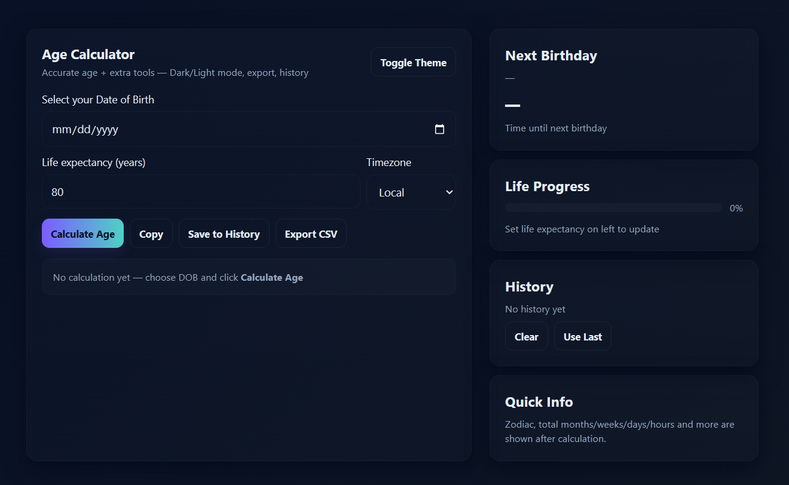
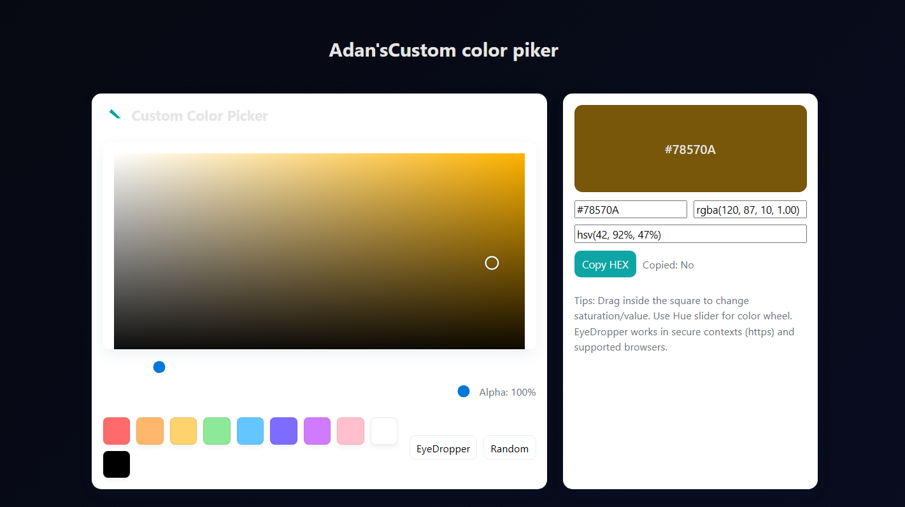
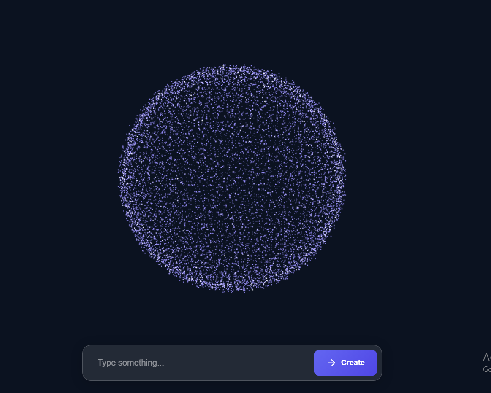

My some new Projects
Some of my new and featured work with my hardwork and some help of artificial intelligence.
⬅ Back to Main Page








Magic Circle
A sleek and interactive web project that transforms moving
particles into dynamic text effects, showcasing creativity with
efficient performance. Designed to deliver a modern digital
experience with responsive design and smooth transitions by codingstella.com.
Tip:For better view tilt the screen horizontally.